Determination of Chloride in water
Objective:
To determine chloride ion concentration in a water sample by Mohr's method.
Apparatus used:
Pipette, Conical flask, Burette, Beaker, Dropper etc.
Solutions used Sodium chloride solution, Silver nitrate solution, Distilled water, Water sample, potassium chromate as indicator Description Chloride increases the electrical conductivity of water and thus increases its corrosivity. In metal pipes, chloride reacts with metal ions to form soluble salts, thus increasing levels of metals in drinking-water.
 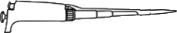
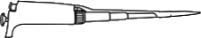


 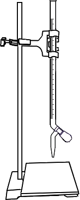
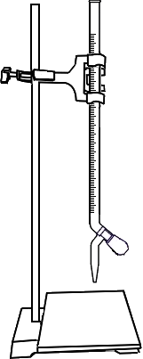
Standardisation of Silver Nitrate Solution
Fill the burette with the Silver Nitrate (AgNO3) solution upto zero mark.


 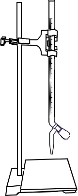
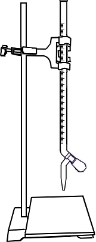
 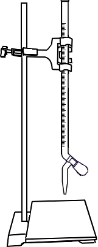
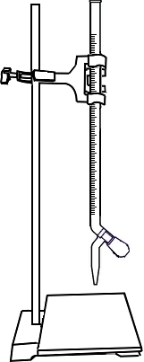

 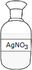
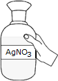
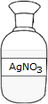
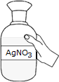
Add 10ml of 0.0141N standard Sodium Chloride (NaCl) solution to a conical flask via graduated pipette carefully without forming air bubbles.
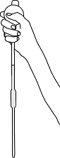 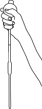 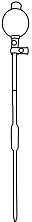 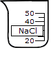
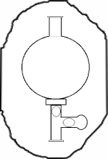
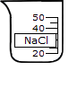
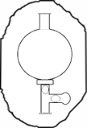

Squeeze the pipette bulb and dip pipette into the NaCl solution
Press the up arrow on the bulb to take the liquid up into the pipette
Add 3-4 drops of Potassium Chromate as indicator to the conical flask.
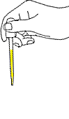 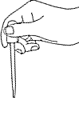
Titrate the Sodium Chloride solution till the colour change from yellow to pinkish yellow.
 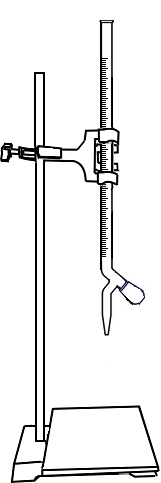
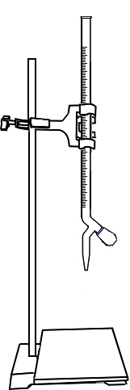


Open the knob to start the liquid running into the conical flask
Close the knob when the colour of solution in conical flask changes to pale yellow
Initial burette reading = 0 ml
Final burette reading = _______ ml
Observations:
| Volume of the NaCl solution(ml) | Burette Reading (ml) | Volume of AgNO3 (ml) ( Final Value - Initial Value ) | |
| Initial | Final | ||
| 10 | 0 | ||
✔
✘
Normality of AgNO3 =
Blank Test
Fill the burette with the Silver Nitrate (AgNO3) solution upto zero mark.
Add 10ml of distilled water to a conical flask via graduated pipette carefully without forming air bubbles.
Squeeze the pipette bulb and dip pipette into the distilled water
Press the up arrow on the bulb to take the liquid up into the pipette
Add 3-4 drops of Potassium Chromate as indicator to the conical flask.
Titrate the Sodium Chloride solution till the colour change from yellow to pinkish yellow.
Open the knob to start the liquid running into the conical flask
Close the knob when the colour of solution in conical flask changes to pale yellow
Initial burette reading = 0 ml
Initial burette reading = _______ml
Observations:
| Volume of the distilled water(ml) | Burette Reading (ml) | Volume of AgNO3 (ml) ( Final Value - Initial Value ) | |
| Initial | Final | ||
| 10 | 0 | ||
Sample Titration
Fill the burette with the Silver Nitrate (AgNO3) solution upto zero mark.
Add 100ml of sample to a conical flask via graduated pipette carefully without forming air bubbles.
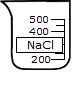
Squeeze the pipette bulb and dip pipette into the sample
Press the up arrow on the bulb to take the liquid up into the pipette
Add 3-4 drops of Potassium Chromate as indicator to the conical flask.
Titrate the Sodium Chloride solution till the colour change from yellow to pinkish yellow.
Open the knob to start the liquid running into the conical flask
Close the knob when the colour of solution in conical flask changes to pale yellow
Initial burette reading = 0 ml
Initial burette reading = _______ml
Observations:
| Volume of the sample water (ml) | Burette Reading (ml) | Volume of AgNO3 (ml) ( Final Value - Initial Value ) | |
| Initial | Final | ||
| 10 | 0 | ||
Calculations:
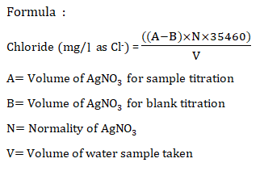✔
✘
Chloride in water =
Inference:
According to BIS for drinking water, the acceptable range of chloride is less than 250mg/l?
True FalseTitration =